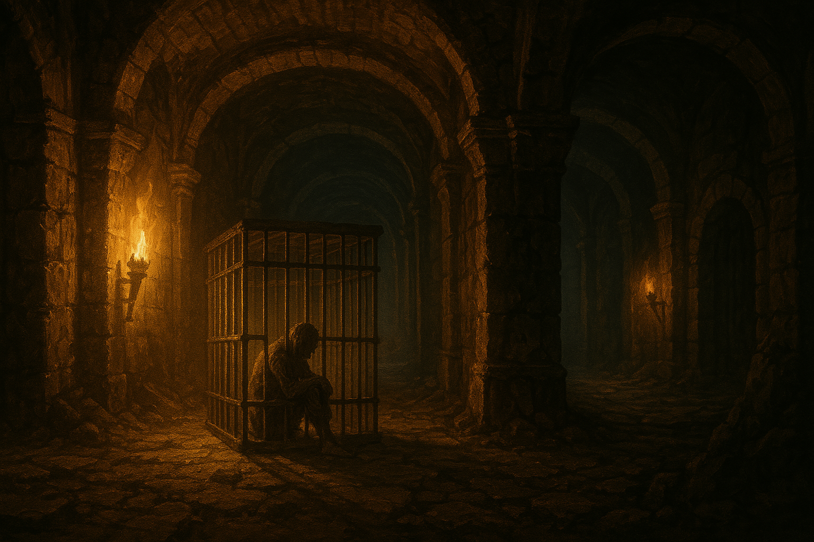

Chapter 1: Altered Mindset
Beneath the Temple


Beneath the Temple
15048.07.23
踏出漆黑的木製電梯，恢復體力的薩梅爾發現了地上一只小型木盒子。那是一只被稱為「洛林的音樂盒」的小盒子，裡面放送著妖精們的民謠「征服者的後裔」。
暫時脫離了危險，冒險者們與米多莉對峙，質疑他在禱告儀式時離奇的失蹤。米多莉發自內心的懺悔與道歉讓其他冒險者們暫時擱下了心中的不滿，一起繼續前進。
家亨、烏柯與嗚兮噢尼突然被一個腦中浮現的聲音喊住，三人發現了這聲音來自自己在與狼群戰鬥時，死而復甦的背後主使，多姆尼爾，自稱是詐欺之神奧提森的兒子。多姆尼爾要他們分別在冒險團內完成一個天大的玩笑來取悅他，他會判定誰的玩笑最棒，以成為他在世間的代理人，並承諾這個身份只會帶給他們好處而已。
在地下城的牆壁上，冒險者們看見了不少看不懂語言雕刻的文字，不過依照他們過去所見，認為應該是拉索斯語。
在一處門口前，冒險者們遇見了一個巨大的食人魔，臉上帶了一個黑色面具。在對談後，他們認識了這個自稱古古，愛吃糖糖，眼睛看不見的單純食人魔，並小小戲弄了他一番。冒險者們繞過了古古，卻誤觸了機關，幾名冒險者受到了來自門邊機關所射出的箭的傷。
跨過門後，冒險者們肚子餓，坐了下來吃東西，也問了古古要不要吃東西，並邀請古古一起踏上冒險。古古聽聞可以吃到更多糖糖便欣然答應。
哼著獸人的歌謠，古古領著冒險者們走到了一處死巷，卻因為看不見而撞到了頭，倒在地上大哭。
冒險者們發現左方、右方，以及前方都各有一扇門，分別有不同的標誌發著光。左方的門是一個 🤚，前方的門是一個 🙏，而右方的門則是一個 👇。左方的門可以推得動，但是挺重的，前方的門則較容易推開。冒險者們慫恿古古進到前方的門探索，但是古古因為體型太大進不去而很失望。嗚兮噢尼第一個踏入，發現裡面一片漆黑。其他冒險者們分別進入，並告訴古古在外面等他們並幫他們把風。
當所有人踏入前方的門後，除了帕拉丁外的所有人都陷入了幻象之中，面對過去自己的創傷與重要的人，也分別受到了來自他們的傷害。經過一段時間後，所有人都清醒了過來，但是有幾位冒險者明顯感覺到有除了自己以外的人的存在。在經過烏柯變身成冰原狼後的嗅聞後，他斷定米多莉有問題，眾人也在向米多莉詢問下發現他的確有所破綻，並與他發生戰鬥，最終擊昏他並將他綑綁。
同時，米多莉發現自己漂浮在一個全黑的異樣空間，四周什麼都沒有。經過一段時間的觀察，米多莉發現有三雙來自不同方向的眼睛正在觀察著他。試圖與這些人對話，米多莉發現這些人應該是拉索斯的信徒，想與他談判，讓他在冒險團中擔任間諜。米多莉不想順從，也因為時間很多，拿出了口袋中從Tai Tai我還要那裡拿到的項鍊玩弄，一段時間後，他與寄宿在項鍊裡的多姆尼爾建立起了溝通。多姆尼爾提議，要米多莉放棄自己的信仰，改信他的父親，詐欺之神奧提森。不過米多莉沒有就範，但是因為多姆尼爾臨時起意的惡作劇，嚇到了在外觀察的三位拉索斯信徒。後來拉索斯信徒失去了耐心，直接將米多莉遣回自己的身體，但是附在他身體內的另一個靈魂依然沒有離開。
在米多莉回神之前，冒險者們從前門的房間藉由擊破了一個隱藏的門，走到了另一個房間，並發現了桌上放有四個神奇的物品。YHWH拿走了百寶袋，而烏柯則拿走了夜視鏡、幸運石，以及一顆神秘的石頭。冒險者們也為了防範米多莉做出意料之外的行為而將她綑綁後塞住嘴巴。
冒險者們再度探索了這個房間，發現兩端各有一扇門。YHWH在開其中一道門的過程中傷了他的手。簡單探索了門後的空間後，冒險者們決定待在原本的房間先作休息再繼續冒險。
守夜的過程中，幾位冒險者像是受到蠱惑般，一直想將手伸進當初傷了YHWH手的門。在大家清醒後，一同進入了新的房間。
新房間內像是迷宮一般，烏柯帶頭，找到了通回古古所在的大廳的門，以及另一個門，上面站了一隻石像鬼，兩顆眼睛鑲嵌著鑽石閃閃發光。在冒險者伸手想去拿取鑽石的同時，石像鬼動了起來，向他們攻擊。一邊對抗石像鬼，冒險者們也試圖突破木門，最終終於打破了門也擊敗了石像鬼。YHWH用百寶袋裝了石像鬼碎裂的石塊，而薩梅爾也將兩顆鑽石收起。
木門內是向下的樓梯。冒險者們走下了樓梯，進入了一到長廊。越走越遠，光線也越來越亮，同時，也從遠處傳來有人叫喊「救命」的聲響。不久後，冒險者們看見一個巨大的籠子，裡面有個瘦弱的人被困在裡面。
15048.07.23
Stepping out of the dark wooden elevator, Samael, who had recovered his strength, found a small wooden box on the ground. It was a box with the name of "Lorin's Music Box", playing the Elvish song of "Descendants of the Conqueror".
As the adventurers finally escaped from danger, the adventurers confronted Midori, suspecting her mysterious absence during the ritual. Midori's sincere repent and apologize made the other adventurers put aside their dissatisfication, and continued on the journey.
Jiaheng, Uko and Usioni suddenly heard a voice in their mind. They found that the voice was from the individual behind their resurrection when fighting the wolves. Domneil, who claimed to be the son of Ultisen, the God of Trickery. Domneil wanted them to perform a massive prank in the group inividually to please him. He would decide who did the best to be his champion, and promised that this title would only bring them good will.
On the walls in the dungeon, the adventurers saw some carved texts that they didn't recognize. But from what they'd known, it should be Laxthosian.
At an entrance, the adventurers saw a huge orc with a black mask on his face. After conversation, they got to know this blind, simple-minded orc, named "Guu-Guu", who loved to eat "Gum-Gums". They mocked him, and walked pass him, but triggered a trap. Several adventurerswas hurt by the arrows shot from the trap.
Crossing the door, the adventurers got hungry, and sat for some food. They even asked Guu-Guu if he wanted some, and invited him to join the adventure. Guu-Guu happily accepted the invitation after learning that he could have even more Gum-Gums.
Humming Orcish nursery rhymes, Guu-Guu lead the adventurers to a dead-end. After bumping into the wall due to him being blind, Guu-Guu collapsed to the ground and started crying.
The adventurers found that there were doors each on their left, right and front side, with different signs of glowing lights. 🤚 on the left， 🙏 up front, and 👇 on the right-hand side. The left door was heavy, but could be opened, while the front door was rather light. The adventurers suggested Guu-Guu to explore in the front door, but Guu-Guu was disappointed that he couldn't enter because of his large size. Usioni stepped into the door first and found it to be complete darkness, while the others followed. They asked Guu-Guu to wait for them and keep watch.
After all the adventurers ented the front door, all but Paladin experienced illusion, seeing their past trauma and important figures, and got hurt by them. After a while, all of the adventurers woke up, but some of them sensed someone else other than the party within them. After Uko turned into a dire wolf and sniffed around, he judged that Midori was guilty. The adventurers also found some flaws after asking her questions, fought her, and tied her up.
At the same time, Midori found herself floating in a dark mysterious space. After some time of observatiom she found three pairs of eyes observing her from different directions. She tried to communicate with these people, pnly to find that they were Laxthos believers, trying to negotiate her to be a spy in the party. Midori wouldn't give in, and since she had plenty of spare time, she took out the mysterious necklace she got from YHWH out from her pocket. After a while, she got in contact with Domneil, who had been residing in the necklace. Domneil offered Midori to give up on her deity and believe in his father, Ultisen, the God of trickery. Midori wouldn't agree, but Domneil's prank scared the three observing Laxthos believers. The Laxthos believers finally lost their patience and let Midori back to her body, but a soul that was bound to her hadn't left yet.
Before Midori came back to consciousness, the adventurers broke a hidden door in the front room and entered another room, finding four magical objects on the table. YHWH took the Bog of Holding, while Uko took the Goggles of Night, the Luckstone, and a mysterious stone. To stop Midori from doing anything out of expectation, the adventurers tied her up and stuffed her mouth.
The adventurers explored the same room again, and found two doors on opposite sides. YHWH hurt his hand when opening one of the doors. After exploring what's behind the door briefly, the adventurers decided to take a rest at the room before further adventuring.
During the night shift, several adventurers tried to open the door that YHWH attempted, like they were bewitched. The group entered a new room after waking up.
The new room looked like a maze. Uko led the way and found the door that leads back to the hall that Guu-Guu stayed in, and also another door with a gargoyle on it. Two of its eyes were studded with shiny crystals. When the adventurers were about to take the crystals, the gargoyole started moving, and attacked the adventurers. The adventurers fought the gargoyle whole trying to break the wooden doors, and finally achieved both. YHWH packed all the broken stones from the gargoyles, while Samael took the two crystals.
A downway stairs was in the wooden door. The adventurers walked down the stairs into a long corridor. As they walked further, the light got brighter, and also, they started hearing someone yelling "help". Not long after that, the adventurers saw a huge cage, with a weak-looking person trapped inside.